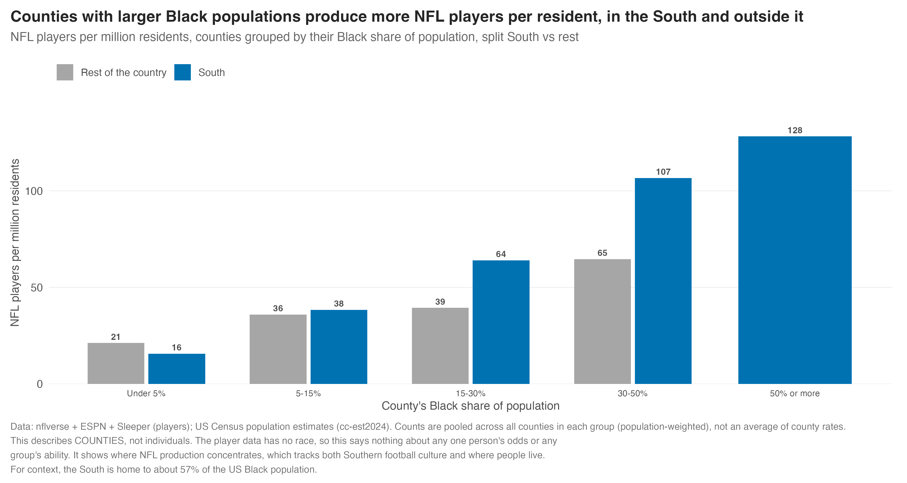

The Birthday Advantage
The other site asked where the best athletes come from. This one asks when they were born, and what people have started doing about it.
Here is a thing that should not be true, and is.
Take the best youth hockey players in America, line them up by birthday, and the calendar is lopsided. Way more of them were born in January and February than in November and December. Not a little more. A lot more. These are kids. Nobody was better at hockey because of the month a doctor happened to write on a form.
Except they were. In almost every youth league the age cutoff falls near the start of the year, so a kid born in January is nearly a full year older than a kid born in December in the same age group. At seven years old, that year is enormous. The bigger kid scores more, makes the better team, gets the better coaching, gets told he is good, and starts believing it. The younger kid gets the opposite. By the time anyone is old enough for the gap to stop mattering, the sorting has already happened. We built a system that rewards the accident of a due date and then called the result talent.
That accident has a name. Researchers call it the relative age effect, and we already caught it hiding in our four big American leagues on the other site. This piece is about what happens next, because the story got a lot more interesting once people figured out that if being old for your grade is an advantage, you can just go get one.
Three parts. First, the accident nobody chooses. Then the strategy people invented to beat it. Then the part that should make you a little uncomfortable, which is what the whole thing does to the rest of a life, long after the last whistle.
The accident
You did not pick your birthday. It picked a lot of things for you anyway.
Start with what we measured. Line up every player in the NFL, MLB, NHL, and NBA by the quarter of the year they were born, and compare it to how births actually land on the calendar. Three of the four leagues barely move. Hockey is a staircase.

Players born in the first quarter of the year make the NHL at 1.30 times the rate you would expect from the calendar. Players born in the last quarter come in at 0.74. Football, baseball, and basketball sit flat between about 0.98 and 1.05, no meaningful tilt at all. Hockey is doing something the others are not, and it is doing it to children.
Zoom into hockey month by month and the staircase gets even cleaner.

January and February births show up at about 1.33 times expected. November and December land near 0.70. Same country, same sport, same league, and the only thing that changed is which end of the age-cutoff year a kid was born on. That is the whole effect in one picture, and it holds in every era we checked going back decades. American hockey has been handing out advantages by birthday for a very long time.
Football, on the other hand, does not care what month you were born. That turns out to be the useful part.
The reason football stays flat is that it caps eligibility at three years out of high school, so almost everyone arrives inside the same tight window. Our NFL rookies pile up at 22, 23, and 24, with only a sliver at 20 or 21.

Only four players in 35 years reached the NFL at 20: Braelon Allen, Tremaine Edmunds, Amobi Okoye, and Kevin Jefferson. It happens. It is just rare. The reason to care is that football is a flat line, which makes it the perfect control for the rest of this story. When we go looking for age doing something strange, football is the ruler we measure against.
Hockey is not alone. The research says the relative age effect runs strongest in soccer and swimming, two sports built on hard age-group cutoffs that funnel kids for years, and our leagues do not include either one. So we went and got the birthdates. Pulling every US soccer player and swimmer with a recorded birth date out of Wikidata, more than 5,600 footballers and 750 swimmers, the same January tilt shows up in both.

Swimmers peak in January at 1.34 times expected. Soccer does something even more pointed: the newest cohort, the kids young enough to have grown up under the current calendar-year cutoff, are born in January at 1.72 times the expected rate and in December at barely half.
Now, we wanted this to be a clean experiment. US Soccer moved its youth cutoff from an August basis to a January calendar-year basis around 2016, so in theory the birth-month peak should have picked up and slid across the calendar with it. It did not. The January skew was already there in players who grew up under the old August cutoff, and it got stronger, not different, in the newer group. Two honest reasons that could be true. The newer cohort is small and fresh to Wikipedia, so some of that spike may be the earliest bloomers being the only ones famous enough to have a page yet. And the calendar-year sorting kids feel is not only the soccer federation's cutoff. It is the school year, the travel-league brackets, and every other age fence stacked on top. The clean flip we were hoping for is not in this data. The effect itself very much is.
Soccer and swimming are also the only sports here with real women's data, which lets us ask a question worth asking: is this a boys thing? It is not. Split the birthdays by sex and the whole shape barely moves. Early-year births run about 1.15 times expected for women and men alike, and both slide down to the same place by the end of the year. The calendar sorts girls exactly as hard.

The loophole
If being old for your grade is an edge, and everybody knows it now, the obvious move is to go manufacture one.
Now it stops being an accident. Parents read the same studies we did, and so do travel coaches, and the response, especially in youth basketball and football, has been to hold kids back a year on purpose. An eighth grader repeats a grade, shows up to high school a year older and a year bigger than the kids he is now ranked against, and the birthday advantage that used to be luck becomes a decision. It is legal, it is spreading, and it has a clean upside if the goal is a scholarship.
How common is it? The honest answer is that nobody has measured it well. The best prevalence estimate we could find puts academic redshirting above 20 percent of kids overall and near 40 percent at private schools, but that is a single regional estimate with no year-over-year trend behind it. The tidy version everyone wants, the share of top-100 recruits who are old for their grade and whether it is climbing, does not exist in any public dataset. Recruiting sites publish rank, position, and height, but not birthdates. So this is the number we most want and cannot yet get, and we are saying so rather than drawing a line through data that is not there.
There is even a wrinkle in the word itself. In recruiting, "reclassify" usually means a phenom jumping a grade forward to get to college sooner, which makes him younger, the opposite of the hold-back move. Cooper Flagg, born in December 2006, reclassified up. The manufactured-age story is real, but you have to keep the two directions straight, and the clean data to size it up is still locked behind paywalls and one-player-at-a-time lookups.
Share of top recruits who are old for their grade, by class year. Blocked because recruiting rankings do not publish birthdates in bulk. Minimum viable version: one or two recent classes cross-referenced by hand against public birthdates, reported as a labeled subsample, not a full census.
The players who already made it, meanwhile, are aging in place, and there we do have the data.
Track the age at which players turn pro over time and the leagues split apart in a way that lines up exactly with their rules.

Baseball, which has no eligibility cap, has drifted older for 35 years, from about 24.4 to 25.4. Football, capped at three years out of high school, holds flat near 23 the entire time. Basketball is the interesting one. Its entry age fell through the prep-to-pro and one-and-done years, bottoming out around 22.3, and has ticked back up over the last few seasons. The likely reason is the same money that is reshaping everything else in college sports. When name-image-likeness deals and the transfer portal make staying in school pay, the fringe pro prospect who used to declare early now runs it back for another year of development and another year of paychecks. The players do not get younger anymore. They age in place, on purpose, because the incentives finally reward it.
And this is why football being flat matters. It is not that athletes in general are getting older. It is that the sports without an age cap are inflating and the one with a cap is not, which tells you the aging is a response to incentives, not something in the water.
It does not stop at the buzzer
If a birthday can bend a sports career, the fair question is why it would stop there.
Take the idea out of the gym. The sorting that starts on a youth field starts in a kindergarten classroom too, and with a bigger cutoff to hide behind. Inside a single grade the age gap can run almost a full year, and the older kids are, on average, the bigger, more coordinated, more verbal, more confident ones in the room. Teachers, being human, tend to read that as smarter. The research has been finding for years that relatively older kids get better grades, score higher on tests, get flagged for gifted programs more, and are more likely to land at selective colleges. Same effect, different field.
We cannot pull a spreadsheet of every kid's grades by birthday, and we should not pretend to. But economists have, and they have been finding the same shape for twenty years. The chart below is theirs, not ours, and it is worth sitting with.

The oldest kids in a grade outscore the youngest by 4 to 12 percentile points on fourth-grade math and science, across nineteen countries. That alone would be a fine footnote. It does not stay a footnote. The relatively youngest kids end up about 7.7 points less likely to take the SAT or ACT and 11.6 points less likely to enroll in a four-year college. A gap that started with who could sit still in first grade is still visible at the college gate. Same effect, different field, higher stakes.
Here the boys-versus-girls question gets more interesting, because the answer depends on how far out you look. On the test itself, it barely matters. The oldest kids in the grade are overrepresented among the top scorers whether they are boys or girls, by about seven or eight points either way. A big Norwegian study of more than 170,000 kids lays it out plainly.

The oldest-in-grade edge is about the same size for boys and girls. Where the sexes actually split is later, in the long run. A larger body of work, including a 2021 review of 21 studies, keeps finding that the youngest-in-grade fare somewhat worse when they are boys: less likely to finish school on time, and in one study that followed people to age 30, more likely to earn less as adults. Girls feel the early tilt just as much in the classroom, it just seems to fade faster for them afterward. So the old intuition that boys mature a step slower does real work here, only not where you would first look for it. It is not the test scores. It is what happens in the twenty years after.
Which raises the question we most wanted to answer. Does it ever stop? So we took the same birth-month method we pointed at hockey players and pointed it at the people running public companies.

In our sample, July is the single rarest month to be a chief executive, at about 0.69 of what the calendar would predict, with June also below the line. July and June are exactly the birthdays that, under a September school cutoff, make a kid the youngest in the room. It is the relative age effect showing up in the corner office, forty years after the youth sport cutoff that may have started it.
Be careful with this one, though. Our sample is only 187 CEOs, small enough that a single quiet month can be noise, and a broader pull with looser criteria washed the dip out. It is also 173 men and 14 women, so what this really shows is that male chief executives are less likely to be summer-born, which we should say out loud rather than dress up as everyone. The reason to trust the direction anyway is that the careful studies, run on the full S&P 500, find the sharper version of exactly this: something like 6 percent of CEOs born in June and July each, against 12.5 percent in March. Our little replication points the same way the big ones do. Treat it as a nod, not a proof.
Which is why one fix is to hand out the advantage on purpose
All of this is having a real cultural moment, and the person at the center of it is Richard Reeves, whose book Of Boys and Men made the case that the male slide is real and measurable. He put numbers on the intuition that boys run a step behind. Girls are about 14 points more likely to be ready for school at age five, the widest gap of its kind, and the part of the brain that handles planning and self-control matures in girls roughly a year ahead of boys. The gap is widest in the mid-teens, right when grades start deciding what comes next.
His fix is blunt. Start boys in school a year later than girls, by default. Redshirt all of them. If being the oldest kid in the grade is an advantage, and the research keeps saying it is, then hand it to the kids who are a step behind instead of leaving it to the luck of a due date. It is the relative age effect turned from an accident into a policy. And it is already happening at the top of the income ladder. Among summer-born boys with a college-educated parent, about one in five is already held back a year. The families who can afford to buy their kid an extra year of size and maturity are buying it. Everyone else takes the birthday they were given.
The through line
Put the three acts next to each other and they make one argument. A birthday you did not choose gives some kids an early edge, the edge is real enough that families have started manufacturing it on purpose, and the same head start may keep compounding in classrooms and careers far from any field. The kid who was a little older in first grade was a little better at soccer, got a little more praise, tried a little harder, got a little further, and the gap never fully closed. It started with the month on a form, and for a lot of people it never went away.
The brainstorm list
Everything below is Michael's running list of ideas for the full "Birth" video, pulled from his outline and our texts, grouped the way he framed it: Birthday, Birth Place, Birth Family, Birth Order. Each card says what he asked for, where it actually stands, and the next concrete move. We knock them out one at a time and promote the ones with legs up into the acts above. Nothing here is finished; it is the backlog.
Framing, the thing to solve first
Michael's real question: the rich-get-richer story is intuitive, so where is the misconception or the little-known truth? Everything else serves this.
Michael: a lot of this is intuitive, the system feeds itself. Where is the "the only reason I'm not in the NFL is I wasn't rich" gut-punch, and where is the twist people do not expect?
Found: the intuitive spine is the money feedback loop. The twist, now confirmed in our own data, is the Underdog reversal below: the late-born players who beat a stacked age cutoff go on to outlast the early-born. It flips "older kids win" into "the system is quietly cutting its best young talent." That is the line to build the piece around.
Builds on: Underdog reversal (confirmed), Manufactured age (Act Two).
1 Birthday, the relative age effect
This companion piece is mostly here already. These are the fixes and additions Michael asked for on top of it.
Michael: bar charts are easier to read than the calendar heatmap. Give me a clean month-by-month bar for each sport, like the NHL one I sent.
Found: four leagues, one panel each, bars for the share of players born in each month. Instead of a plain trend line we drew the real US birth curve on top (the dashed line), so you can see who is over the line. Hockey towers over it in January to March and drops under it in October to December. The other three sit right on it.

Feeds: Act One. Built by R/27.
Michael: the original NHL study plotted the percent of players in each quarter, Q1 through Q4. Match that exact look, for every sport.
Found: percent of players per quarter, one line per league, the same shape as the 1982 figure he sent. Hockey slides 32, 28, 22, 19 percent from Q1 to Q4. The other three stay flat near 25. The dashed line is the real birth share for comparison.

Pairs with: the month bars above. Built by R/27.
Michael: did you weight by real births at all? Late summer months have the most babies.
Found: he was right. The baseline is now the real US birth distribution (CDC counts, 1994 to 2003), which peaks in August and bottoms out in February, not a flat line. Switching to it sharpens hockey a little (Q1 goes from 1.30 to 1.33 times expected) and deepens the CEO summer dip (July goes from 0.69 to 0.67). It cuts in our favor: summer-born people are rarer among these players than even a flat baseline would suggest. The dashed line on both charts above is this real curve.
Touches: all of Act One and the CEO chart. Built by R/27.
Michael: outline literally lists "Underdog (opposite)" under Birthday.
Found: it is real, and it is the hook. We took every NHL player who logged a game (n = 5,639) and split them by birth quarter. Q1 sends far more players to the league (32 percent vs 19 percent for Q4), but the Q4 players who make it post a higher median career: 170 games and 42 points, against 135 games and 30 points for Q1. Fewer late-born players get through, and the ones who do are better. The system takes the oldest kids and quietly loses good young talent, and the pros who slipped through prove those kids existed.

Still to try: soccer, if we can find an outcome metric in the public data, and whether the same holds for NHL points among skaters only.
Answers: the Framing card. Related: Matthew principle. Built by R/29.
Michael: the Florida NBER paper looks at kindergarten, elementary, high school, and after. I want one visual anyone can read that shows the effect waning over time but still there.
Where it stands: we cite these findings in prose but do not have the single "effect size across life stages" chart he is describing.
Next: put kindergarten, elementary, high school, and adult estimates on one normalized axis so the decay is a single line the eye can follow.
Sources: NBER w23660 (Florida), Bedard and Dhuey. Feeds: Act Three.
Michael: income and earnings differences basically disappear by the mid-to-late 20s. Norway study, Norway follow-up, two American papers.
Where it stands: we mention it; not charted. This is the honest "it fades" counterweight to the CEO chart, and it belongs on the same page.
Next: chart the earnings gap shrinking toward zero with age from the Norway and US papers, labeled as published research.
Pairs with: the fading-across-a-life visual.
Michael: outline lists "Matthew Principal" under Birthday.
Where it stands: this is exactly our "through line," the small early edge that compounds. We just have not named it. Naming it gives the piece its spine.
Next: name the Matthew effect in the through-line, maybe a small compounding diagram, early nudge to career gap.
Ties together: the whole piece.
Michael: only 187 CEOs, can we get more? Past CEOs are fine.
Where it stands: current pull is current CEOs of public companies. n is small enough that one month can be noise, which is our biggest weakness on this chart.
Next: broaden the Wikidata query to former CEOs and a wider public-company net, and cross-check against a Fortune or Forbes list, then re-run after the real-births re-baseline.
Feeds: Act Three CEO chart. Related: birth order, August hold-back.
Michael: does the August pattern hold, or is it muddied because so many August babies get held back a year? Very common for August birthdays.
Found: a real fingerprint of his hunch. Real US births peak in August, yet CEOs are rarest in July (0.67 of expected) and overrepresented in August (1.33). Under a September school cutoff, August babies are the youngest in the grade and the most likely to be held back a year into being the oldest. That July-low, August-high split is exactly what the hold-back move would leave behind. The CEO sample is small, so it is a lead, not a lock.
Bridges: Act Two (hold-backs) and Act Three (CEOs). From R/27.
Michael: further question in the outline, has birth month shifted as parents get more deliberate about timing?
Where it stands: we already split the NFL heatmap by era, so the machinery exists. Two different things live here though: the age-cutoff skew, and deliberate birth timing, which is its own story.
Next: trend the size of the effect by decade per sport, and keep "timing selectivity" separate so we do not blur the two.
Extends: Act One.
2 Birth Place, the where
Most of this already lives on the main site. Michael wants it pushed further, and controlled so it is "fair."
Michael: what share of the NFL comes from the South, West, Midwest, Northeast? Control by population so it is fair. Then control by race.
Found: per million residents, the South makes 60 NFL players, the Midwest 39, the West 34, the Northeast 23. Put another way, the South is 54 percent of all players on 39 percent of the population, about 1.4 times its fair share, while the Northeast is 9 percent of players on 17 percent of people, about half. Race is the next card.

Uses: main-site map. Race handled below. Built by R/28.
Michael: which states produce the most NFL players per capita, and the least?
Where it stands: the county map has this underneath; we have not rolled it to a clean state ranking.
Next: a ranked state per-capita bar, top and bottom, easy to read.
Lives near: the main-site geography.
Michael: need a bit more on the "where" for the different sports, not just the NFL map.
Where it stands: the Deep South per-capita map is NFL only.
Next: render the same county per-capita map for MLB, NBA, and NHL so we can compare the geographies side by side.
Extends: the main-site map.
Michael: can we look at where positions come from? QB for example.
Where it stands: we already found QBs are born richest and move high schools the least, which killed the Mater Dei migration idea. No per-position map yet.
Next: per-position hometown and income maps, QB first, then the skill and line groups.
Related: main-site QB income finding.
Michael: outline notes urban share is shrinking and the rich are getting richer, then transition that into "family."
Where it stands: the main site already carries the shrinking-urban and income-ladder findings. This is the natural handoff from "where" to "family."
Next: write the transition, place to family, rather than build new charts.
Hands off to: Birth Family.
3 Birth Family, the who-you-were-born-to
The most sensitive and, for Michael, the most interesting. Race is the headline ask, and the hardest to get right.
Michael: the South has most of the country's Black population, roughly two-thirds. So how much more likely is a Black kid from the South to make the NFL than one from the Northeast or the Pacific Northwest? Same for white kids and for Samoans.
The honest limit: the player data has no race, so we cannot follow any individual and cannot answer "a Black kid's odds, South vs Northeast" without making it up. So this describes counties, never people, and says nothing about anyone's odds or any group's ability.
Found: two place-level facts. First, the South is home to about 57 percent of the US Black population, close to Michael's guess. Second, NFL production rises steadily with a county's Black share of population, from 20 players per million in counties under 5 percent Black to 128 in counties over 50 percent. That climb holds both inside the South and outside it, so it is not only a Southern-culture story. It tracks where football investment and Black communities both concentrate.

Still open: the Samoan and Pacific Islander angle. American Samoa is a territory, not a county, and Pacific Islander counts per county are tiny, so a clean per-capita read is not there yet. It needs its own source.
Depends on: the quadrant index above. Highest interest. Built by R/28.
Michael: income, via zip code, which is kind of a "where."
Where it stands: the main site already has the income ladder and the SuperZips work. This is the bridge from place to family.
Next: reuse, do not rebuild. Frame it as the family's resources, not the town's.
Same thread as: cities and zip codes.
Michael: outline lists "College Alumni Child" under family.
Where it stands: no clean data source yet on whether athletes' parents went to college, or the same school. Father-son pro pairs are a weak proxy.
Next: scope whether any dataset supports this before committing, otherwise keep it as a narrative point.
Part of: the family-resources argument.
Michael: Kid A vs Kid B, the first three major expenses of adult life, help with college, help with a house, help with a wedding.
Where it stands: this is an explainer device, not a dataset. It makes the money advantage concrete and human, which the piece could use.
Next: build it as a simple side-by-side graphic once the income sections are set.
Illustrates: income as the engine.
4 Birth Order, the sibling question
Michael asked about this twice, for both athletes and CEOs. Least developed, worth a scoping pass.
Michael: have you looked at birth order for anything? And separately, are CEOs first-borns? Some are only children, so they would be overweighted either way.
Where it stands: sibling data is hard to get at scale. Published work leans two ways: first-borns overrepresented in leadership, later-borns overrepresented in some risk-taking parts of sport. We have neither in-house yet.
Next: find a usable source, then decide between citing published research and hand-collecting a small pro or CEO sample, labeled as a subsample.
Connects: CEO sample (Birthday) and the family cards.
Further questions
Loose threads from the end of Michael's outline. Parked, not dropped.
Michael: do we add "Politics"?
Where it stands: the main site already has the political-geography finding, every league leans bluer-county than the country, the NFL least so. Room to fold in if it fits the "Birth" spine, risk of sprawl if it does not.
Next: decide whether it earns a place or stays on the main site only.
Exists on: the main site.